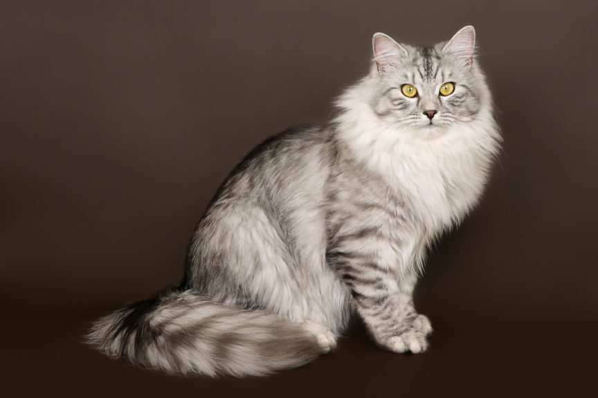

Koty Syberyjskie
Koty syberyjskie to duch dzikich kotów zamknięty w “małym formacie” kota domowego. Ich półdługie futro z nieprzemakalnymi włosami okrywy wierzchniej i grubym,
gęstym podszerstkiem sprawia, że przypominają trochę koty norweskie leśne i maine coon’y. Jednak w stosunku do maine coon’ów są zdecydowanie mniejsze, a od kotów norweskich
odróżniają je dłuższe nogi. Syberyjczyki określa się jako średniej wielkości koty. Mają dobrze umięśnione ciało i są relatywnie ciężkie, z wagą dochodzącą do 9
kilogramów. Podobnie jak w przypadku innych większych kotów, pełne rozmiary osiągają dopiero w wieku około 3 lat.
REKLAMA